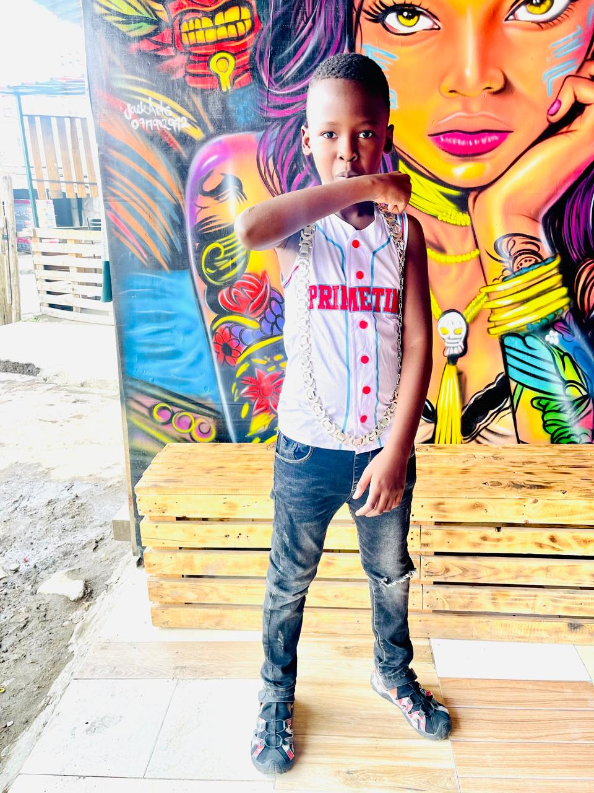

Birthday website experience
Liam’s day, told with presence.
More than a birthday page, this is a warm digital tribute built around Liam’s presence, his memories, and the people who are glad to celebrate him.

Mood
Bright, bold, and full of personality
Scene
Color, confidence, and a birthday moment worth keeping
Why it feels special
Warm in tone, polished in finish, easy to share.
01
Personal first
Every page is shaped around Liam’s photos and personality, so the website feels personal instead of copied from a template.
02
Luxury without clutter
The typography, soft glass cards, and subtle motion give the site a premium mood without making it feel crowded.
03
Phone-ready layout
The layout scales cleanly on phones, so it still feels elegant when someone opens it from WhatsApp, Instagram, or a browser.
A better kind of birthday website
Made to feel like a memory book with style.
The idea was simple: make something that looks refined, but still feels close, real, and easy to connect with. Something Liam can open later and still enjoy.
Editorial design
Mobile friendly
Photo-led storytelling
Lightweight static build
Birthday tribute
To Liam, with respect and celebration.
Some people stand out without trying too hard. They carry a calm confidence, a natural sense of style, and an energy people remember. This space was built to reflect that feeling.
Happy birthday, Liam. May this new year bring peace, progress, good people around you, and moments that remind you how far you have come.